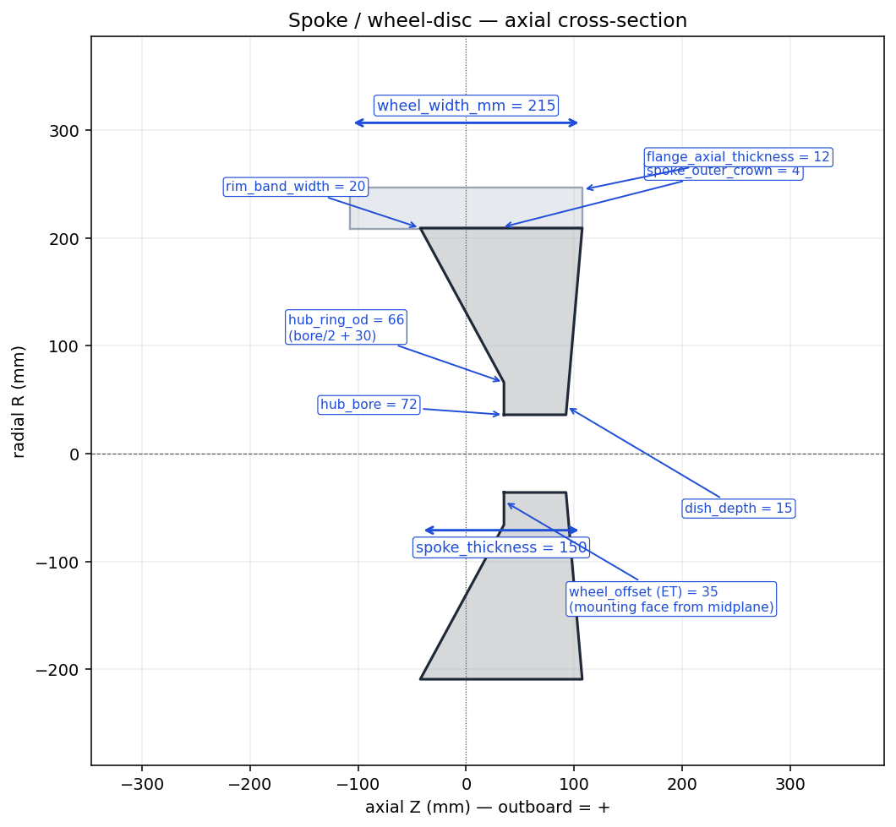
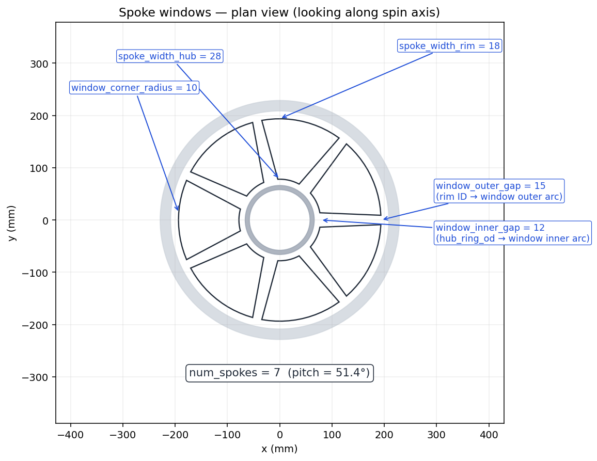

Builder 2 of 6
Spoke / Wheel-Disc Builder
Curved wheel disc (hub + spoke section + crowned OD cap), spoke window cutouts, and a hollow C-channel rim barrel. All three live in the same coordinate frame so they can be unioned directly by the wheel assembler.
Overview
This builder exposes three independent functions:
| Function | Returns | Purpose |
|---|---|---|
build_spoke_disc(spec) | Workplane (Solid) | Revolved disc: thick hub, asymmetric curved spoke section, crowned OD cap. |
cut_spoke_windows(disc, spec) | Workplane | Punches num_spokes windows through the disc, leaving spokes between them. |
build_rim_barrel(spec) | Workplane (Solid) | Hollow C-channel rim with flanges at each end and bead seats between. |
All three are driven by a single
SpokeSpec. The wheel
assembler builds them, unions them, and unions in the tire on top.
Disc — axial cross-section

Axial (Z–R) cross-section through the wheel disc at the defaults. Outboard is +Z; the disc is asymmetric (biased outboard) like a real positive-ET wheel.Spoke windows — plan view

Plan view looking along the spin axis. Window inner arcs sitwindow_inner_gap_mm outside the hub ring; window outer
arcs sit window_outer_gap_mm inside the rim ID. Each
window’s corners are rounded with a 2D fillet.
Parameter reference
Rim & wheel body
| Parameter | Default | Units | Meaning |
|---|---|---|---|
wheel_width_mm | 215 | mm | Full axial width (flange-tip to flange-tip). Sets the bead axial position. |
rim_diameter_in | 18 | in | Bead-seat diameter (kept in sync with the tire’s value). |
rim_flange_mm | 18 | mm | Radial height of the flange tip above the rim radius. |
hub_bore_mm | 72 | mm | Diameter of the central hub bore. |
wheel_offset_mm | 35 | mm | ET — axial position of the mounting face from the midplane. Positive = mounting face outboard. |
Outboard “dish” face
| Parameter | Default | Units | Meaning |
|---|---|---|---|
dish_depth_mm | 15 | mm | Axial sag of the outboard face vs. the rim attach plane. 0 = flat dish. |
dish_profile | “spherical” | — | Spoke side profile — spherical (smooth Bezier) or conical (straight). |
Spoke window cutouts
| Parameter | Default | Units | Meaning |
|---|---|---|---|
num_spokes | 7 | — | Number of spokes (= number of windows). Must be ≥ 3. |
spoke_width_hub_mm | 28 | mm | Chord width of each spoke at its inner (hub) end. |
spoke_width_rim_mm | 18 | mm | Chord width of each spoke at its outer (rim) end. |
window_inner_gap_mm | 12 | mm | Radial gap between hub OD and the window’s inner arc. |
window_outer_gap_mm | 15 | mm | Radial gap between rim ID and the window’s outer arc. |
window_corner_radius_mm | 10 | mm | 2D fillet radius on each window corner. Set 0 to disable. |
Construction (rim & disc thickness)
| Parameter | Default | Units | Meaning |
|---|---|---|---|
rim_band_width_mm | 20 | mm | Radial wall thickness of the rim band. Also sets the disc OD via rim_radius − rim_band_width + 0.5. |
flange_axial_thickness_mm | 12 | mm | Axial thickness of each flange “lip” at the rim ends. |
spoke_thickness_mm | 150 | mm | Axial thickness of the disc at its OD. The disc tapers thicker toward the hub. |
spoke_outer_crown_mm | 4 | mm | Radial crown height on the OD cap (the cap bows outward by this much). |
Usage
from paramub import SpokeSpec, build_spoke_disc, cut_spoke_windows, build_rim_barrel
spec = SpokeSpec(num_spokes=10, spoke_width_hub_mm=20)
disc = cut_spoke_windows(build_spoke_disc(spec), spec)
rim = build_rim_barrel(spec)
wheel = disc.union(rim)
Implementation notes
0.5 mm rim overlap. The disc’s OD is built at
rim_radius − rim_band_width + 0.5 so the union with the rim
barrel closes cleanly. Without the overlap the two surfaces would be
exactly tangent and the STL tessellation could leave a hairline gap.
C1 continuity at the OD cap. Both ends of the cap carry
a radial tangent (+R at the inboard end, −R at the outboard end), so the
cap blends smoothly into the inboard and outboard spoke surfaces — no
visible step in the cross-section.
Window fillet fallback. If the requested
window_corner_radius_mm is too large for the chosen window
geometry, cut_spoke_windows retries with a scaled-down
radius (1.0 → 0.85 → 0.7 → …) and only falls back to sharp corners if
every attempt fails.